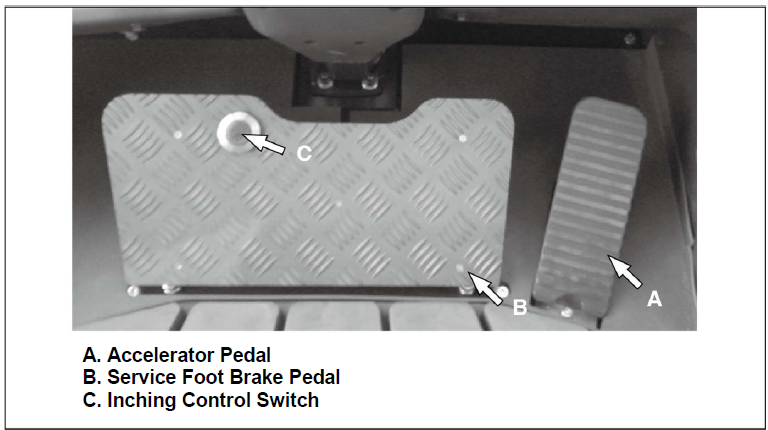

5 Pedal Configuration

| A. Accelerator Pedal |
|
||||
| B. Service Foot Brake Pedal |
|
||||
| C. Inching Control Switch | Inching Control Switch – if the service foot pedal and inching control pedal,
the controller regulates the hydraulic pressure to the clutch packs, to permit disc
slippage by means of the proportional valve technology. Further pushing on the pedal
completely relieves clutch pack pressure and applies the service brakes to stop and
hold the lift truck Note:
The purpose of the inching control pedal is to provide precise inching control at slow travel speed, with high engine rpm. This is used for fast hydraulic lift during load approach, pickup or positioning. Note:
INCHING” mode can be switched over from inching to no-inching or vice-versa by using the inching switch |